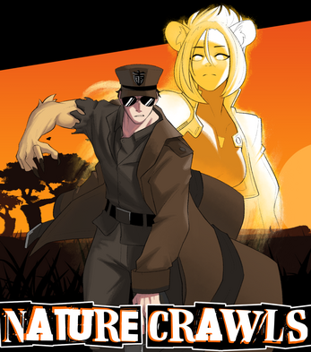

FINAL YEAR PROJECT01 / DUNGEON CRAWLERUnreal · Blueprints
Nature Crawls
Fight for nature in a world threatened by robotic factories. A conservationist draws power from South Africa’s Big Five to take on the machines.
MY CONTRIBUTION
Play on itch.io Gameplay development across enemies, UI, and stats, with a focus on integrating the systems into a complete game. Collaborated on the project while others handled the art.